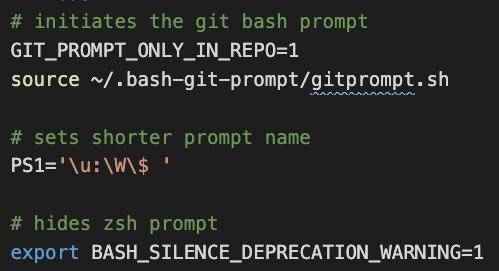

Setting up your Macintosh, Part 1
Everything listed here is free.
If you have a new “M1 Apple Silicon” Mac (built 2021 or later) then pay special attention to directions when installing and look for “Apple Silicon” versions.
In setting up your Mac you will be doing a bunch of steps on blind faith without much explanation, mostly it is downloading software and configuring it. I don’t go into a lot of details because these steps are typically only done once.
You’ll be using your Terminal, which is a program that allows you to talk to your computer using text. It might be scary at first but you’ll soon get used to it as you’ll be using it throughout this class (mostly from within Visual Studio Code).
Be sure to read all the directions for a particular section before diving in as there are hints that you’ll need as you install and configure.
Install Homebrew and Git
Homebrew is a “package manager”, meaning it helps you install programs that are not in the Apple app store. Git is a version control manager, which will learn about soon.
- Install Homebrew. Just run the first command noted on that page and then come back here.
- Install Git using this homebrew command:
brew install git.
Don’t install the Git GUI clients. There isn’t an “app” for Git, it just lives inside your computer.
Set up your git user and email
Next we’ll set your user.name so Git knows who you are.
- In your Terminal, do this but use your name instead of Mona Lisa:
git config --global user.name "Mona Lisa"Now we’ll set your user.email.
- In your Terminal do this but use your email:
git config --global user.email "email@example.com"You will want to use the same email when you create your GitHub account.
Set up GitHub
If you don’t already have a GitHub account, go to github.com/ and create an account.
IMPORTANT: Choose your username carefully and don’t make the name specific to this class. This is your personal GitHub profile FOREVER. I would avoid upper case characters as a matter of convention. Your name becomes part of a URL for your projects when we publish them.
Creating ssh key
We’re going to create a special file on your computer so that your machine can connect to your GitHub account. (GitHub doens’t like sending your password around). It will seem complicated, but it’s not really.
If you have ever set up SSH keys before, find the instructor. (If that doesn’t make sense to you, you likely haven’t.)
Before you do this next step, know it will ask you to supply a location and password: Leave it blank and just hit enter in both cases.
In your terminal, run the following command but with your email:
ssh-keygen -t ed25519 -C "your_email@example.com"When it prompts you about a location, JUST HIT RETURN to accept the default.
When it prompts you for a passphrase, JUST HIT RETURN to leave it blank.
You should get a nice little art looking return on your terminal, eventually.
Adding key to Github
What those steps did is create a file on your computer and put inside of it a bunch of random characters. We now need to add the contents of those files into the Github web interface, so it can confirm you are you.
- Once you are through the steps above, do the following command in your terminal:
pbcopy < ~/.ssh/id_ed25519.pubThis copies the contents of that file you created to your clipboard. It’s like finding the file, opening it and then copying the contents.
- Go to github.com and click your user icon and choose Settings.
- In the user settings sidebar on the left, click SSH and GPG keys.
- Click New SSH key or Add SSH key.
- In the “Title” field, add a descriptive label for the new key. Name it after your computer, like “Personal MacBook Air” or something.
- In the “Key” field, do Command-V to paste your key into the box.
It will look something like this:

Almost done!
- Click Add SSH key.
- If prompted, confirm your GitHub password.
Test
- From your Terminal, do the following command:
ssh -T git@github.com- If you are asked about “RSA key fingerprint”, type yes and hit return.
- In the end, you should have a success message like: “Hi username! You’ve successfully authenticated, but GitHub does not provide shell access.” If you get that message, you are good!
Code editor
- Install the code editor Visual Studio Code on your machine. (There are different versionf for Apple vs Intel chips.) It’s a typical application install that shouldn’t give you any trouble.
- Follow these “Launching from the command line” instructions to add the
codecommand to your path. This allows us to launch Visual Studio Code from a terminal. - TEST: Close your Terminal and restart it. Type
code ./and see it opens VS Code. Hollar if it doesn’t.
Updating the bash_profile
We are adding some software to adjust your Terminal prompt to show your git “state” when in a tracked folder.
Open a new Terminal window and do the following:
git clone https://github.com/magicmonty/bash-git-prompt.git .bash-git-prompt --depth=1Now open (or create) the
.bash_profilefile. (See note below if this doesn’t work)code .bash_profileOnce your
.bash_profileopens in VS Code, copy and paste this to the bottom of the file:# initiates the git bash prompt GIT_PROMPT_ONLY_IN_REPO=1 source ~/.bash-git-prompt/gitprompt.sh # sets shorter prompt name PS1='\u:\W\$ ' # hides zsh prompt export BASH_SILENCE_DEPRECATION_WARNING=1Close and restart your Terminal program to load the new settings.
In addition to adding some commands to help you with git, we also added something to shorten your terminal prompt. We also added a command to stop asking you to change to zsh.
If you use
code .bash_profileand it doesn’t open the file in VS Code then you didn’t set thecodecommand in the “Code Editor” section. First quit/relaunch Terminal and try again. If that doesn’t work, go back to “Launching from the command line” and do that again.
VS Code extensions
If you look on the left-menu of Visual Studio code, there is a square puzzle looking icon that gives you a list of extensions that you can search for an enable. See the VS Code docs for more info.
- In VS Code, click on the Extensions icon.
- In the search box, type in Live Server and find the one created by Ritwick Dey.
- Click the Install button on that page.
- Do the same for markdownlint by David Anson.
- Do tne same for Nunjucks by ronnidc.
These all make Visual Studio Code more awesomer in different ways.
VS Code preferences
I have some helpful user preferences for VS Code that you might find useful.
Go to the Code > Preferences > Settings.
At the top right of the code editor are a series of icons, including this one:

In the new file that opens, copy and paste the code below and replace what is there.
{ "editor.fontSize": 14, "terminal.integrated.fontSize": 12, "editor.renderWhitespace": "boundary", "editor.tabSize": 2, "[md]": { "editor.insertSpaces": true, "editor.tabSize": 2, }, "editor.renderControlCharacters": true, "highlight-matching-tag.style": { "backgroundColor": "rgba(63, 191, 63, 0.20)" }, "editor.wordWrap": "on", "window.zoomLevel": 0, "editor.minimap.enabled": false, "files.associations": { "*.html": "html" }, "emmet.includeLanguages": { "njk": "html", "nunjucks": "html" }, }Save and close the file.
This sets the default text size, line wrapping, tab stops and other useful things we will need.
Testing Part 1 setup
We need to make sure everything is set correctly before moving on. So here is how to check:
Before doing this, open a new Terminal window:
- Do
git config user.nameand you should get a response that is your name. - Do
git config user.emailand you should get back your email address. - Do
ssh -T git@github.comto test SSH keys. If you are asked about “RSA key fingerprint”, say yes. In the end, you should have a success message like: “Hi username! You’ve successfully authenticated, but GitHub does not provide shell access.” - Do
ls -a | grep bashand you should get a list that includes at least “.bash-git-prompt” and “.bash_profile”. - Do
code ~/.bash_profileand it should open your bash_profile, which should have (at least):

Next: If you are in Intro to Coding, next up is learning more about version control using Git and GitHub.
We’ll handle Part 2 of the computer setup later in the semester.